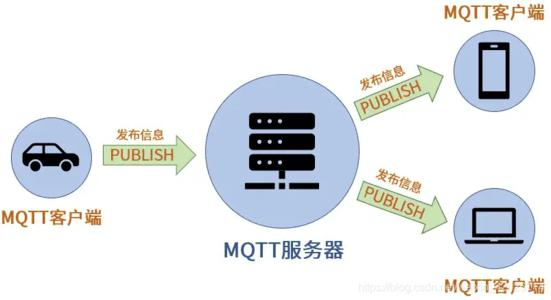
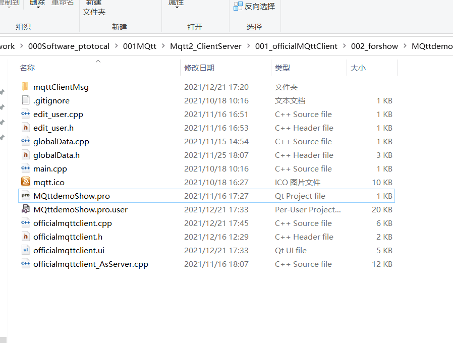

MQTT协议通信
=====☆☆☆☆☆=====
MQTT在windows下的安装工具及使用说明（验证OK）
点击下载MQTT资料包
代码下载
=======☆☆☆☆☆☆=======
MQTT连接,MQTT消息发送和订阅===QT,C++ @windows,Linux
要点包含：
如何建服务器，
如何编译MQTT库
如何调用
MQTT（Message Queuing Telemetry Transport，消息队列遥测传输协议），是一种基于发布/订阅（publish/subscribe）模式的"轻量级"通讯协议，该协议构建于TCP/IP协议上，由IBM在1999年发布。MQTT最大优点在于，可以以极少的代码和有限的带宽，为连接远程设备提供实时可靠的消息服务。
这些特点使得它非常适合物联网通信
特点：
1轻量，
2可以在网络差的环境中使用
3 使用发布订阅模式
4遗嘱
5消息有三种QOS(消息质量)（0只发布不管关心不收到，1最少收到一次，2确保收到一次，只一次）
它的架构如图：

Broker服务搭建
我们使用Mostuitto服务器，下载：
https://mosquitto.org/download/
MQTT库制作，通过官网下载源代码：
官网：
https://mqtt.org/software/
调用并增加示例代码。

© All rights reservedDesign: 825772667@qq.com